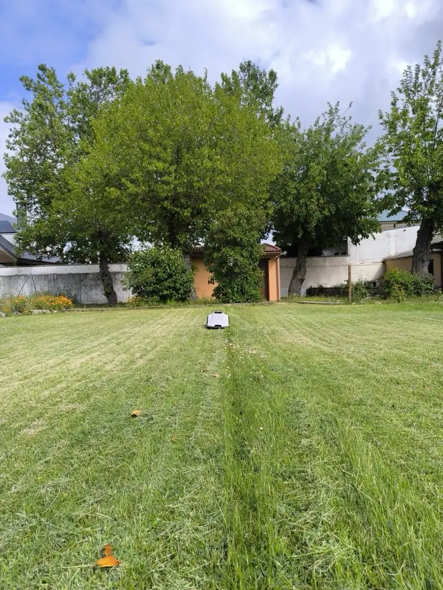
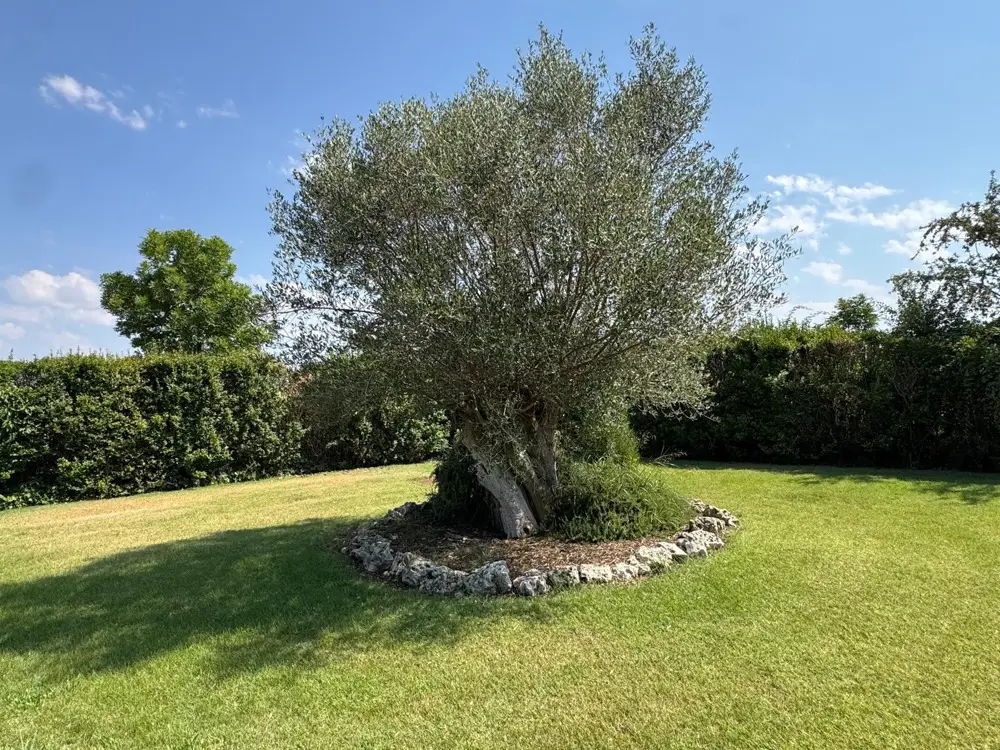

Corta al amanecer, cuando el césped está fresco
En julio en Toledo nadie quiere cortar el césped a las cinco de la tarde. El robot sale al amanecer o de noche, en silencio: un cortacésped automático que trabaja mientras tú no sales.
Deja que el robot corte tu césped de Toledo cada día, también en julio: cuota anual desde 660 €/año* con instalación, mantenimiento y averías a cargo de IRM.
*Césped de hasta 600 m². Hasta 1.000 m², 760 €/año.

En Toledo el césped no da tregua: con el calor crece de marzo a noviembre y, si tiene riego, también en pleno agosto. El alquiler de robot cortacésped en Toledo te quita ese trabajo por una cuota al año. Ponemos el robot, lo instalamos, lo mantenemos y lo cambiamos si se avería; tú lo ves cortar desde la terraza.
En julio en Toledo nadie quiere cortar el césped a las cinco de la tarde. El robot sale al amanecer o de noche, en silencio: un cortacésped automático que trabaja mientras tú no sales.
Con el calor el césped sube en días. Si el robot se para, lo reparamos o te instalamos otro en menos de 7 días [CONFIRMAR PEPO plazo].
Alquiler de cortacésped en Toledo a menos de 2 € al día aunque el verano sea largo: 660 €/año hasta 600 m² y 760 €/año hasta 1.000 m²*. Mismo precio que en cualquier zona [CONFIRMAR PEPO]. *Pago único anual por transferencia. IVA [CONFIRMAR PEPO]. Más de 1.000 m²: consúltanos [CONFIRMAR PEPO].
La Sagra y el entorno de Toledo capital están a menos de una hora de la sede de IRM en Madrid, así que la instalación de robot cortacésped en Toledo la hacemos nosotros en una visita planificada, con fecha cerrada al llamar [CONFIRMAR PEPO frecuencia]. Hacia Talavera o la Mancha toledana también vamos, agrupando visitas [CONFIRMAR PEPO cobertura real].
Metros de césped, si hay piscina, cuesta o dos zonas, y en qué municipio de Toledo está la casa. Te decimos cuota y fecha en la misma llamada.
Vamos a tu casa, miramos el terreno y dejamos un robot cortando de prueba. La demostración cuesta 175 €* y se resta de la cuota si contratas.
Montamos la base, marcamos las zonas, fijamos la altura de corte y programamos las horas de menos calor. App en tu móvil; la cuota, por transferencia.
Desde la llamada hasta tener el robot cortando en Toledo: [CONFIRMAR PEPO] días. Asistencia ante avería: [CONFIRMAR PEPO]. *[CONFIRMAR PEPO cifra exacta y mecánica del descuento].
El robot va sin cable enterrado, así que la tierra arcillosa de la Sagra no hay que abrirla. Si tu parcela tiene desnivel, también sirve [CONFIRMAR PEPO pendiente máxima].
Vivienda y jardín. En Toledo el jardín que más vemos es el de las urbanizaciones de chalet y adosado de la Sagra: Illescas, Yuncos, Seseña, Numancia de la Sagra, Cedillo del Condado o El Viso de San Juan, con parcelas de 300 a 600 m², piscina y césped alrededor. Alrededor de la capital, en Olías del Rey, Cobisa, Argés, Bargas o Layos, las parcelas son algo mayores y con más desnivel.
Clima y meses de corte. El clima de Toledo es de calor fuerte y verano largo: el césped empieza a crecer en marzo, no para hasta noviembre y en invierno apenas se detiene unas semanas, con pocas heladas. Son ocho o nueve meses de corte. El robot sale cada día a primera hora o de noche; en invierno trabaja menos y espera en su base.
Lista orientativa [CONFIRMAR PEPO].
¿Tu pueblo de Toledo no está? Dinos dónde y cuántos metros de césped: te contestamos si vamos y en qué fecha.
Ya hay jardines de Toledo con un robot de IRM cortando cada mañana. Así lo cuenta uno de sus dueños.

"[Cita real · cómo era el verano antes, a qué hora corta ahora el robot, qué pasó cuando llamó a Pepo]"
— [NOMBRE], [MUNICIPIO], [m²], cliente desde [AÑO] · [PLACEHOLDER · CONFIRMAR PEPO cliente con permiso]
Sí [CONFIRMAR PEPO]. La Sagra es la zona de Toledo a la que más vamos: Illescas, Yuncos, Seseña, Numancia de la Sagra, Cedillo del Condado, El Viso de San Juan, Carranque o Ugena. Son urbanizaciones nuevas de chalet y adosado con césped de tamaño medio y piscina, el jardín para el que está pensado el renting. Si tu urbanización tiene varias parcelas interesadas, dínoslo: organizamos las instalaciones en la misma visita.
Si el robot se para, en menos de 7 días lo tienes reparado o sustituido por otro [CONFIRMAR PEPO]. Lo primero es llamarnos: muchas paradas se arreglan desde la app. Si hay que ir, vamos. En verano, cuando una semana sin cortar se nota, es cuando más vale ese compromiso. La avería y el robot de sustitución van dentro de la cuota.
Sí. Las urbanizaciones de Olías del Rey, Cobisa, Argés, Bargas, Layos, Burguillos o Nambroca, y las de la propia ciudad de Toledo, entran en la cobertura [CONFIRMAR PEPO]. Son parcelas algo mayores que las de la Sagra, con más desnivel y a veces con el césped en dos alturas. El robot sin cable perimetral trabaja en zonas separadas y en cuesta.
Sí. La cuota en Toledo es la misma que en cualquier zona donde instalamos un robot cortacésped en alquiler: 660 €/año hasta 600 m² y 760 €/año hasta 1.000 m² [CONFIRMAR PEPO suplemento por desplazamiento]. Incluye el robot, la instalación sin cable, la app, el mantenimiento y las averías. Que en Toledo el robot corte más meses no sube la cuota: el precio va por metros de césped.
No. El robot trabaja solo en tu jardín de Toledo: sale de la base, corta, vuelve y se carga, cada día, sin nadie delante. La cercanía cuenta el día de la instalación y si hay una avería que no se resuelve a distancia, y para eso está el compromiso de los 7 días. Toledo, además, nos queda a menos de una hora.
Al llamar te damos la primera fecha libre para ir a Toledo [CONFIRMAR PEPO]. Ese día hacemos la demostración y, si el jardín es apto, la instalación en la misma visita: base, zonas, horarios de corte y app. Entre marzo y mayo es cuando más gente de Toledo nos llama, antes de que llegue el calor: cuanto antes reserves, antes tienes el robot cortando.
El robot trabaja todo el verano en Toledo, pero lo programamos para que corte al amanecer o de noche, cuando el césped está fresco. Con riego, el césped crece todo el verano y el robot lo deja cada día a la misma altura. Si tu jardín tiene una zona muy expuesta al sol, lo vemos en la demostración y ajustamos los horarios [CONFIRMAR PEPO recomendaciones del fabricante].
No, el renting es anual y se paga de una vez por transferencia. En Toledo tiene aún más sentido: el césped crece de marzo a noviembre, así que el robot trabaja ocho o nueve meses y en invierno descansa, mientras el mantenimiento, la app y la garantía de sustitución siguen activos. En cifras, 660 €/año hasta 600 m² y 760 €/año hasta 1.000 m².